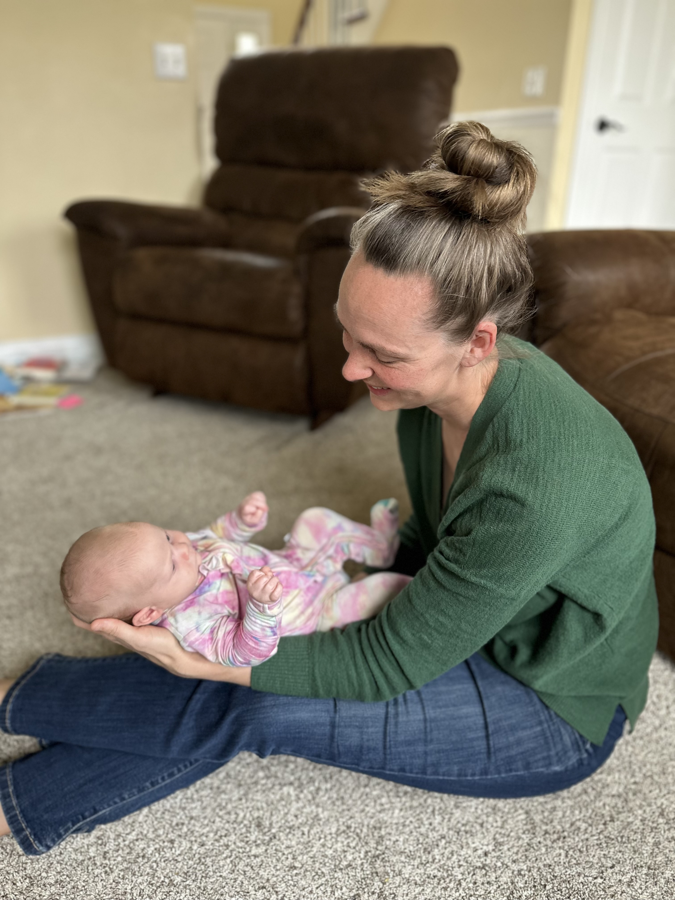

Jacquelynn Arnold · RN, BSN
From Bedside Nurse
to CFT Practitioner
Jacquelynn Arnold lives in Clarkston, Michigan with her husband and their two daughters. With a decade of experience as a registered nurse and a second degree in human development and family studies, she felt well-prepared for motherhood from every angle — technically and academically.
That confidence was tested when her daughters arrived with challenges that traditional medicine struggled to address: multiple allergies, persistent fussiness, and oral ties that affected feeding and comfort. Searching for answers, Jacquelynn discovered Craniosacral Fascial Therapy — and witnessed firsthand the profound impact gentle, whole-body work can have on an infant's health and wellbeing.
"That experience changed everything. I realized there was a whole dimension of healing that my nursing training had never introduced me to."
In 2023, Jacquelynn completed the Gillespie Approach Craniosacral Fascial Therapy training — and immediately recognized that she now had tools to help others navigate their own whole-body wellness journeys. She believes deeply that everyone, from newborns to adults, carries fascial strain patterns that, when addressed, can unlock relief and restore vitality.
Jacquelynn is particularly passionate about working with infants and their mothers, having walked that road herself. She brings both clinical expertise and a deeply personal understanding to every session.